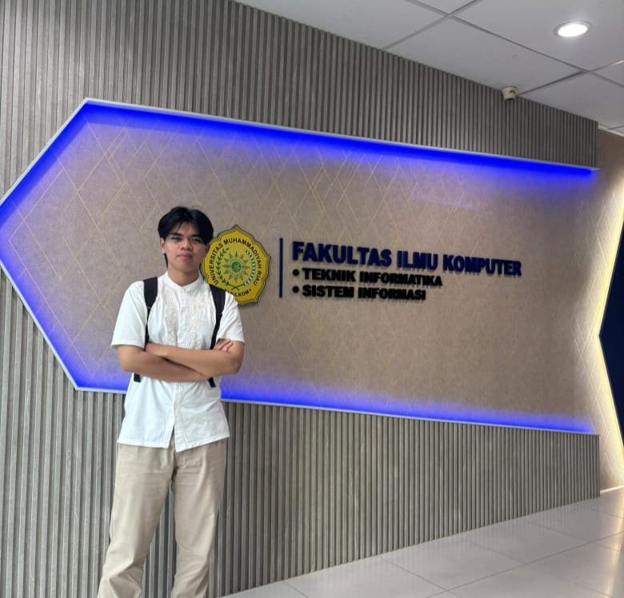

Halo, perkenalkan nama saya Rassya Pratama, biasa dipanggil Rassya. Saya adalah seorang web developer yang menggunakan teknologi seperti HTML, CSS, dan JavaScript. Saat ini saya merupakan mahasiswa dengan jurusan Informatika. Saya memiliki minat yang besar dalam pengembangan website dan terus belajar untuk meningkatkan kemampuan saya.
Nama: Rassya Pratama
Tempat, Tanggal Lahir: Pekanbaru, 11 Juni 2007
Alamat: Jl. Sukaramai, Perumahan Graha Tassindo
Pendidikan
Saya memiliki hobi dalam membuat dan mengembangkan website serta mempelajari berbagai teknologi baru di bidang IT. Saya senang mencoba hal-hal baru dan mengerjakan proyek kecil untuk meningkatkan kemampuan. Selain itu, saya juga belajar secara mandiri melalui internet. Di waktu luang, saya suka membaca komik untuk meningkatkan kreativitas.
Melakukan kegiatan administrasi, membantu pengolahan data, serta mendukung operasional dalam kegiatan penanggulangan bencana. Selain itu, saya juga belajar bekerja dalam tim dan memahami sistem kerja di instansi pemerintah.